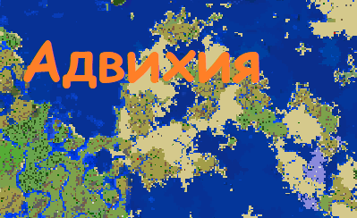
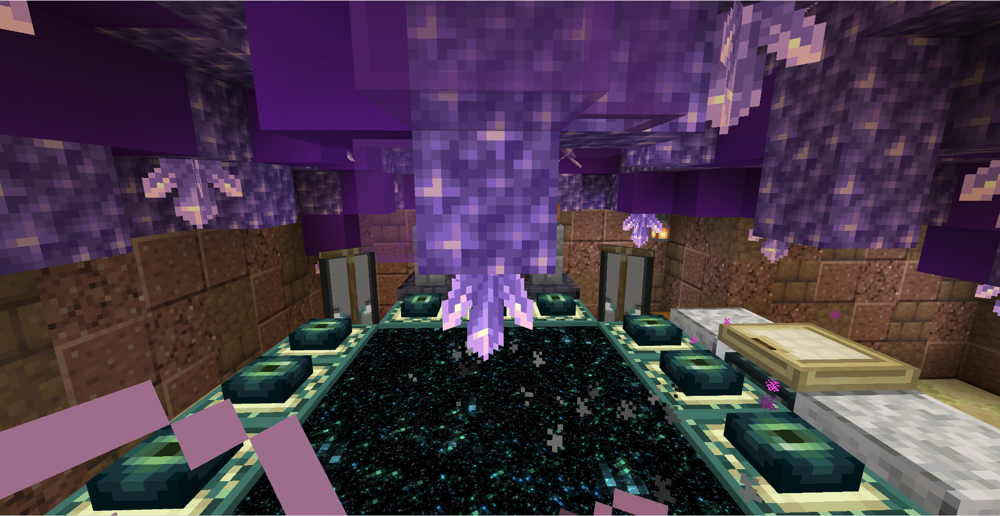
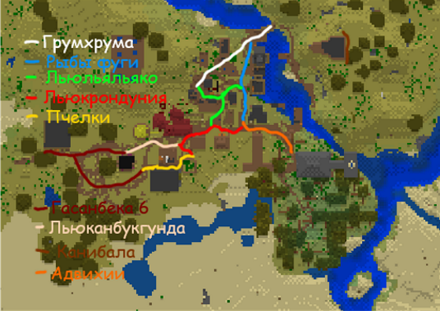

Адвихия

О стране:
Уровень технологий: средний
Уровень магии: низкий
Типы магии: манускрипт, зачатки магии других государств
Правитель/орган власти: Император
Гос религия: Регасан
Распределение религий: Регасан - 78,5%, Паверизм – 18,5%, другое – 3%
Перонажи: Джирджаг ,Гасанбег XIII
Столица: Дезертхард
О Адвихии
Адвихия — это империя, которая является самым большим осколком Орбии. Орбия являлась самой огромной империей времен до портального шторма. Она может встретить вас изобилием торговли, жарким, но дружелюбным климат, а также золотистым песком, который славится своей красотой по всему миру.Сейчас Адвихия восстанавливается после кризиса, вызванного распадом Орбии. Правящая династия является потомками Гасанбека I который потерялся в море и с тех пор оно называлось морем потерь.
В один момент Орбия разрослась до таких масштабов что обнаружила ледник. Орбия захотела получить земли ледника. Их вмешательство пробудило ледник, и он захотел полакомиться человечинкой. Орбия неготовая к войне с нежитью начала проигрывать. И в последствии королевской семье пришлось уехать в самую южную провинцию Адвихию. На последнем издыхании она смогла остановить ледник и прогнать ледник в долгую спячку. Остатки Орбии разбрелись и стали независимыми. Но ни одна из этих стран не смогла достичь мощи Орбии и сильно уступали Адвихии во всем.
В последствии Льюльяльяко в серии завоевательных походов присоединил большинство осколков Орбии включая один из самых больших Ши'задоу. Ши'задоу граничил с ледником и поэтому его главной задачей было присматривать за ним. Но даже в наше время Льюльяльяко считается одним из лучших полководцев и императоров.
Вскоре после портального шторма умер царь Адвихии Морум I и перед своей смертью он завещал свой престол среднему сыну Мораксу . Джирджагу не понравился выбор отца, и он обьявил себя новым императором т.к. его поддерживало большая часть населения кроме военных он легко взошел на престол. Средний сын Моракс собрав большую часть армии решил захватить трон. Но у него не получилось заполучить трон так как Младший принц заранее узнал о восстании и предупредил брата. Джирджаг вспомнил о древней реликвии его рода найденой под столицией адвихии эндер портал.  С помощью эндер портала Император смог победить Моракса уничтожив его армию гигантским выбросом энергии безны. После этого он отправил среднего брата в ссылку в Ши'задоу что бы тот следил за ледником и не претендовал на трон.
Во время совместной экспедиции стран в эндер мир яйцо дракона было украдено самим Мороксом. Впоследствии Ши’задоу просит у МОРа поддержки после вступает в него и отсоединяется от Адвихии. После этих событий Джирджаг был разъярён этой новостью потому что предполагалось что яйцо обладает большой силой и оно пренадлежит Мораксу но еще с большой поддержкой. Из-за случившейся ситуации имератор вступает в ГОК. Что бы заручится поддержкой и восстановить силы. Так же выделяются территория под базу ГОК на территории Адвихии. По тайным сведеньям этой базой является бункер, который запитан энергией портала. В это же время по слухам император создаёт армию нового поколения и торгует с другими участниками коалиции.
Достопримечательности
Хелегстад
Хелегстад - прошлая столица Адвихии, основанная Великим непривзоденным Гасанбеком I.  Она поражает своей древней культурой и архитектурой. Вы можете прогуляться по маленьким улочкам, посетить церковь и древние дома. Весь город построен в стиле "Азиатские трущебы", специальный орбийский архитектурный стиль. Его использовали во всех самых дорогих городах. Так вот многие бедствия пережил Хелегстад. Но однажды давольно давно... В городе началось сильное землятрясение сопровождающиеся взрывами из земли. Жители покидали город толпами. В результате от этих бедствий остались только руины. После этого один мелкий император основал новую столицу и все забыли про настоящую, истинную столицу Гасанбека I. Все императоры до нашего времени не отваживались реконструировать древнюю столицу. Но сейчас император Джирджаг поручил его брату (младшему принцу Адвихии) реконструировать священную столицу. Итак он начал мало по малу восстанавливать ее. Доска за доской, час за часом священный город проростал из глубин земли. И хоть сейчас она не достигла своего величия, но те кто посещает ее восхищается и наслаждается ее. И даже правители и богачи со всех стран купили себе дом в этом городе. Народ надеется на востановление статуса столицы Хелегстаду.
Она поражает своей древней культурой и архитектурой. Вы можете прогуляться по маленьким улочкам, посетить церковь и древние дома. Весь город построен в стиле "Азиатские трущебы", специальный орбийский архитектурный стиль. Его использовали во всех самых дорогих городах. Так вот многие бедствия пережил Хелегстад. Но однажды давольно давно... В городе началось сильное землятрясение сопровождающиеся взрывами из земли. Жители покидали город толпами. В результате от этих бедствий остались только руины. После этого один мелкий император основал новую столицу и все забыли про настоящую, истинную столицу Гасанбека I. Все императоры до нашего времени не отваживались реконструировать древнюю столицу. Но сейчас император Джирджаг поручил его брату (младшему принцу Адвихии) реконструировать священную столицу. Итак он начал мало по малу восстанавливать ее. Доска за доской, час за часом священный город проростал из глубин земли. И хоть сейчас она не достигла своего величия, но те кто посещает ее восхищается и наслаждается ее. И даже правители и богачи со всех стран купили себе дом в этом городе. Народ надеется на востановление статуса столицы Хелегстаду.
Карта города:
